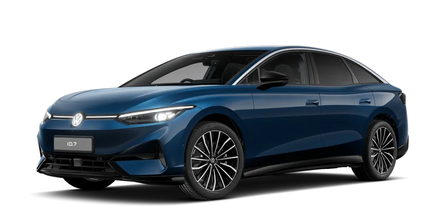

What is the range …
of my
Model: ID.7
when I mostly drive
when I drive
Road type
in
Weather
weather and I am driving
Occupancy
?
Estimated range
600 km
Energy consumption combined 16.6 - 15.2 kWh/100 km 4 •CO₂ emissions combined 0 g/km 4 •CO₂ class A
